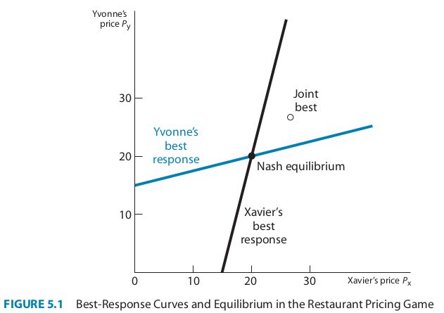

Continuous Strategies
Allowing for an infinite set of possible strategies
So far, in both sequential and simultaneous games, we have restricted the sets of choices available to our players to finite sets.
- Even more complicated games like chess have a countable number of strategies available to a player
- While this can sometimes make it simpler to solve for games with discrete strategies, in other cases it can make more sense to model the choices to players on some continuum
Cases where Continuous Strategies are Useful
- Pricing/bidding/etc in dollar amounts
- Even if there is some minimum unit (like a cent), when there are many options with an obviuous ordering it still makes sense to use continuous values
- Positions in space
- For example, you could choose to place your franchise 1 mile away from your competitors, 100 yards, 1 foot etc.,
Extending Best-Response to Continuous Variables
For our model of price competition, we will extend the method of finding discrete best-response strategies to continuous best-response rules
A best-response rule takes the value of another player’s continuous strategy as an input and returns another continuous value as the best response to that strategy
- this means we can’t use payoff matrices to represent these games anymore,
- instead we will graph these strategies in Cartesian coordinate systems
Setup: Xavier and Yvonne’s Competition
Two restaurants in Yuppie Haven: Xavier’s Tapas Bar and Yvonne’s Bistro.
Each place serves the exact same menu, can only compete based on how much they charge.
This makes this game a good application of continuous strategies because there are many different values which a menu price could take.
Also, each restaurant’s payoff is represented by a continuous payoff function
- In this case, the payoff is the restaurant’s profit which can take on any dollar value and depends on the price and quantity sold by the competing restaurant
Assumptions:
Both set prices simultaneously.
Costs per customer: $8.
Demand depends on both prices:
\(Q_X = 44 - 2P_X + P_Y\)
\(Q_Y = 44 - 2P_Y + P_X\)
Where:
\(Q_X\) is the quantitiy of meals sold and \(P_X\) is the price charged by Xavier
\(Q_Y\) is the quantity sold and \(P_Y\) is the price charged by Yvonne
Notice how each restaurant’s demand depends on thier competitior
Profit Functions
Xavier’s profit is calculated based on his price and number of customers: \[ \begin{align} \pi_X & = (\text{price} - \text{cost})(\textbf{quantity sold}) \\ & = (P_X - 8)\mathbf{(44 - 2P_X + P_Y)} \end{align} \]
Yvonne’s profit follows a similar formula.
How might we derive the best price for each?
Step 1: Expand Xavier’s Profit Function
Let’s expand Xavier’s profit function: \[ \begin{align} \pi_X & = (P_X - 8)(44 - 2P_X + P_Y) \\ & = P_X(44 + P_Y - 2P_X) - 8(44 + P_Y - 2P_X) \end{align} \]
Step 2: Simplify the Expanded Profit Function
Let’s expand Xavier’s profit function: \[ \begin{align} \pi_X & = (P_X - 8)(44 - 2P_X + P_Y) \\ & = P_X(44 + P_Y - 2P_X) - 8(44 + P_Y - 2P_X) \end{align} \]
Now, multiply out the terms:
\[ 44 P_X + P_X P_Y - 2 P_X^2 - 352 - 8 P_Y + 16 P_X \]
What should we do next to find the best price?
Step 3: Deriving Xavier’s Best-Response Function
To find the best price, we differentiate \(\pi_X\) with respect to \(P_X\).
Differentiation:
\[ \frac{d\pi_X}{dP_X} = 44 + P_Y - 4P_X + 16 = P_Y + 60 - 4P_X \]
Set the derivative equal to zero for maximization: \[ P_Y + 60 - 4P_X = 0 \] Solve for \(P_X\): \[ P_X^* = 15 + 0.25P_Y \]
For those without Calculus background
The profit function we wrote out in step 2 seems complicated, so lets simplify it:
\[ \pi_X = - 352 - 8 P_Y + \mathbf{P_X} (60 + P_Y) - 2 \mathbf{P_X}^2 \]
As Xavier, we can only set our own price, \(P_X\), everything else we can just treat as a constant
This fits a more general pattern:
\[ Y = A + BX - CX^2 \]
For those without Calculus background
\[ Y = A + BX - CX^2 \]
If we want to find the maximum of \(Y\) in this equation as a function of \(X\), as long as \(C>0\), this will take the shape of a parabola with a single peak.
- The maxmimum of this function will be reached at:
- \(X^* = \frac{B}{2C}\)
For those without Calculus background
So going back to Xavier’s profit function,
- If \(B = 60 + P_Y\)
- and \(C = 2\)
then applying that the maximum choice will meet \(\frac{B}{2C}\),
we get the same answer of \(P_X^* = 15 + 0.25P_Y\)
Step 4: Yvonne’s Best-Response Function
Yvonne’s problem is symmetric, so we can derive her best-response function similarly: \[ P_Y = 15 + 0.25P_X \]
Question: How do we find the Nash equilibrium from these two best-response functions?
- We have one best response rule for each player as a function of the other player’s pricing strategy
- I.e., a system of two equations and two unknowns
What is a NE in this situation?
Recall that a NE is a stable configuration of strategies in which each player is best responding to the other
- So in this case, when each player is setting a price that maximizes their profits conditional on the other player’s price, there will be no incentive to change price
- In other words, we can plug in one player’s best response rule into the other player’s best response rule to solve for the equilibrium price
Step 5: Solve for Nash Equilibrium
We solve the system of equations for \(P_X\) and \(P_Y\): \[ P_X = 15 + 0.25P_Y \] \[ P_Y = 15 + 0.25P_X \]
Step 5: Solve for Nash Equilibrium
Substitute one equation into the other: \[ P_Y = 15 + 0.25(15 + 0.25P_Y) \] Simplify: \[ P_Y = 15 + 3.75 + 0.0625P_Y \] Solve for \(P_Y\): \[ P_Y = 20 \]
Then, plug \(P_Y = 20\) back into the first equation: \[ P_X = 15 + 0.25(20) = 20 \]
Step 6: Conclusion
At equilibrium:
\(P_X = 20\), \(P_Y = 20\)
Both restaurants charge $20, serve 2,400 customers per month, and make a monthly profit of $28,800.
Recap: Price Competition Breakdown
- Step 1: Expand the profit function.
- Step 2: Simplify the expanded equation.
- Step 3: Differentiate and solve for best-response.
- Step 4: Repeat for Yvonne.
- Step 5: Solve for Nash equilibrium.
Graphically:
